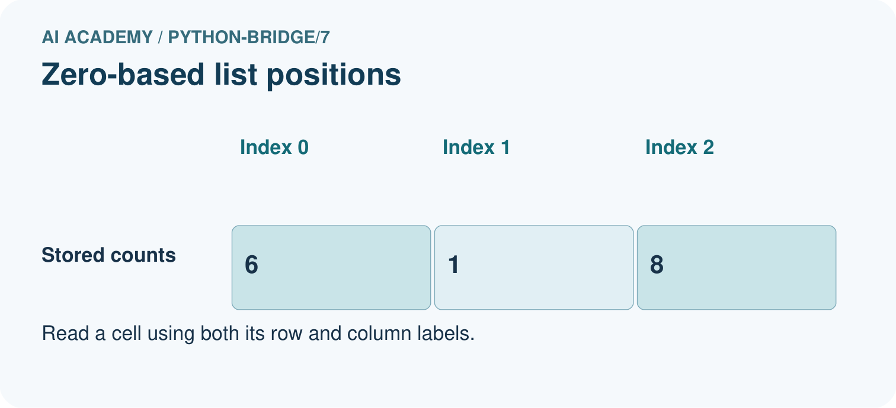
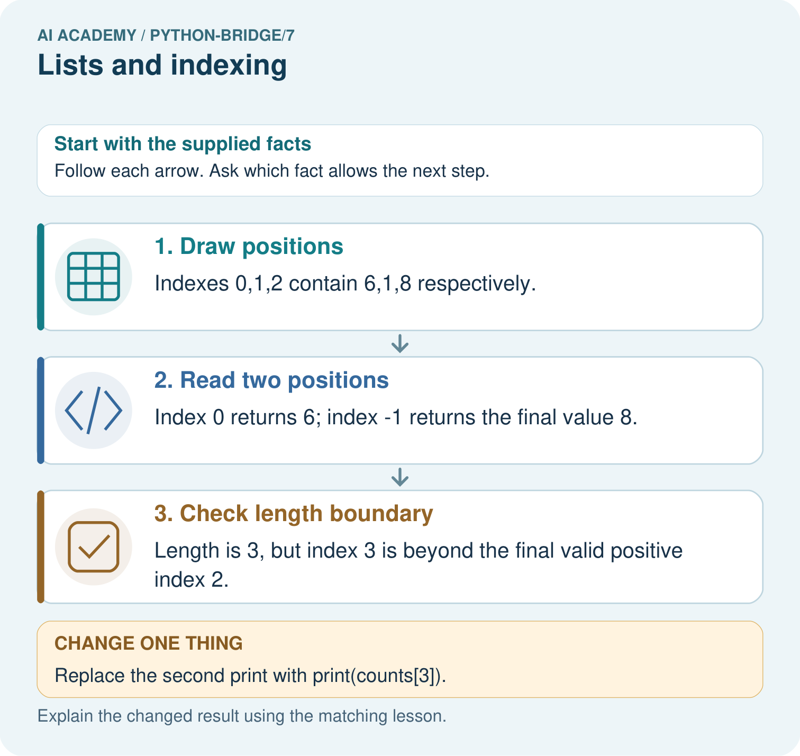

AI Academy · Python readiness bridge · Student lesson
Lists and indexing
Learn to understand, design, build, test and explain AI systems responsibly.
Project: Python readiness portfolio
Before you start
What values does range(3) supply? How many iterations occur?
Plan time to read, investigate and explain. Keep predictions separate from observations.
Student lesson · 1 of 16
Your mission
Your learning target
I can distinguish a list index from the value stored at that position.
I can read and update an item using a valid index.
I can trace a loop through list values and test an empty list.
Remember before reading
Close your notes first. A rough first answer helps us choose the right starting point; it is not a score for your ability.
Without opening the old lesson, explain one key idea from Loops and trace tables. Give an example and a mistake that the idea helps you avoid.
Without opening the old lesson, explain one key idea from Boolean conditions. Give an example and a mistake that the idea helps you avoid.
Without opening the old lesson, explain one key idea from From a paper algorithm to Python. Give an example and a mistake that the idea helps you avoid.
After trying, check the relevant lesson or ask your teacher. Change the part of your explanation that the evidence shows was wrong.
This week you will practise:
Distinguish a list index from the value stored at that position
Read and update an item using a valid index
Trace a loop through list values and test an empty list
Retrieve what you already know
What values does range(3) supply? How many iterations occur?
This week’s end goal
Trace lists and indexing and explain the changed program before running it.
Student lesson · 2 of 16
Notice the evidence
A fictional supply shelf has three trays with counts 4, 7 and 4 in that order. Store them as counts = [4, 7, 4]. Square brackets enclose the list and commas separate its items. The order matters: the first and third trays contain equal values but occupy different positions.
Python counts positions from zero. counts[0] reads the first item, counts[1] the second and counts[2] the third. len(counts) is 3 because there are three items. It is a count, not the last nonnegative index. This lesson uses integer counts and nonnegative indices; Python also supports negative indices, which are outside our current indexing convention.
Student lesson · 3 of 16
See how it works
Positions and stored counts
counts = [4, 7, 4]
print(len(counts))
print(counts[0])
print(counts[1])
counts[1] = 9
print(counts)The printed lines are 3, 4, 7 and [4, 9, 4]. The assignment counts[1] = 9 replaces the item at index 1; it does not add a fourth item or change the two other values. The length stays 3. A recorded count can be changed by code without proving that the physical tray really contains that many objects.
Connect the picture and the explanation
Point to the input, the deciding step and the result in this week’s visual. Explain the same step in ordinary words. A picture helps when you can say what each part represents.
Student lesson · 4 of 16
Compare the cases
Compare a familiar case with a changed case
Start with counts = [4, 7, 4]. Run counts[0] = 6. Write the resulting list, its length and the value at index 2. Predict before running.
Change one thing in the pictured case
Change: Replace the second print with print(counts[3]).
Prediction: The first print shows 6, then IndexError stops the script before the length print.
Reason: The attempted position does not exist.
Student lesson · 5 of 16
Words that unlock the idea
| Word | Meaning |
|---|---|
| List | An ordered collection of items |
| Index | An integer position used to access an item |
| Length | The number of items in a collection |
| Item | One value stored in a collection |
| IndexError | An error raised when an index is outside a sequence |
Student lesson · 6 of 16
Follow a worked example
counts = [4, 7, 4]
total = 0
for count in counts:
total = total + count
print(total)| Item read as count | total before | total after |
|---|---|---|
| 4 | 0 | 4 |
| 7 | 4 | 11 |
| 4 | 11 | 15 |
This fresh script prints 15. for count in counts supplies the stored values, not the indices. Both copies of 4 are processed because both are items. For an empty list written [], the body runs zero times and total stays 0. For [7], it runs once and prints 7.
Learn from the worked case
Cover the result before checking it. Say what is given, choose the procedure, and follow one step at a time. Then uncover the result and explain your first mismatch. Ask why a step is allowed, not only what number it produces.
A pictorial worked case: Lists and indexing
Indexes are positions, not values. A list of shelf counts is read by position.
The facts we will use
Python 3: counts=[6,1,8]; print(counts[0]); print(counts[-1]); print(len(counts)).


Read the picture one step at a time
Why this result follows
List positions begin at zero. A negative index counts from the end; the list length counts entries and is not itself a valid positive index for the final entry.
What this example does not establish
A valid position does not establish that the stored count is accurate; empty lists also have no final element to read.
Read the labelled picture: Label the three index positions. Predict all original outputs, then name the first output and stopping point after using index 3.
Change one thing: Replace the second print with print(counts[3]). Predict the result before checking the explanation. What remains the same?
Student lesson · 7 of 16
Find and repair a mistake
counts = [4, 7, 4]
print(counts[3])This deliberately faulty script raises IndexError. The list has three items, but its nonnegative indices are 0, 1 and 2. Replace 3 with 2 to read the third item, which is 4. For any nonempty list, len(counts) - 1 identifies the last item using a nonnegative index. An empty list has no valid item index.
Avoid confusing values with positions: for count in counts followed by counts[count] would try indices 4, 7 and 4 in this example. If you need both, use for index in range(len(counts)) and read counts[index]. If you only need a total, looping directly through values is simpler.
Locate the earliest unsupported step
A learner loops with for count in counts and tries to read counts[count] for counts = [4, 7, 4]. Identify the first attempted index and error. Explain how to print each value directly.
Student lesson · 8 of 16
Practise together
For counts = [4, 7, 4], give the length, valid nonnegative indices and value at index 1. Explain how the two items with value 4 differ.
Practise with less help: Trace an update
Use workbook W2 for the connected example “Lists and indexing”. First fill the input and rule boxes. Try the middle steps before asking for a hint. After a hint, try the next step yourself.
| Plan | Do | Check |
|---|---|---|
| What is given? Which rule or procedure applies? | Record each intermediate step. | Does the result follow? What remains unknown? |
Explain your trace to a partner. Your partner points to one step to check. Swap roles on the next case. Each person writes their own explanation.
Check your reasoning
Use the worked case for Lists and indexing. Proposed explanation: “Length is the last nonnegative index”. Decide whether this explanation is supported. Point to the step or supplied fact that decides; explain your repair if needed.
Answer on your own before discussion. If you are unsure, say which step you need help with.
Explain the picture
Label the three index positions. Predict all original outputs, then name the first output and stopping point after using index 3.
This is supported practice. Keep the separately named independent case for an attempt before feedback.
Student lesson · 9 of 16
Run the investigation
Predict, investigate and preserve the evidence
Start with counts = [4, 7, 4]. Run counts[0] = 6. Write the resulting list, its length and the value at index 2. Predict before running.
counts = [4, 7, 4]
print(len(counts))
print(counts[0])
print(counts[1])
counts[1] = 9
print(counts)counts = [4, 7, 4]
total = 0
for count in counts:
total = total + count
print(total)counts = [4, 7, 4]
print(counts[3])| Record | Your evidence |
|---|---|
| Given input and fixed rule | |
| Prediction before checking | |
| Actual result, or “not run” | |
| First mismatch and one explanation | |
| Boundary or missing input and expected response |
On paper, trace the supplied procedure. If code is provided, predict before running it in a local practice file. Never write an expected answer as though it were an observed run.
Plan → try → check
Before trying: what do I expect, and why? While trying: which step could first go wrong? Afterwards: what did I actually observe, and what should change? Keep “not run” if you only traced the procedure.
Student lesson · 10 of 16
Build your understanding
Explain → apply → challenge
For counts = [4, 7, 4], give the length, valid nonnegative indices and value at index 1. Explain how the two items with value 4 differ.
A learner loops with for count in counts and tries to read counts[count] for counts = [4, 7, 4]. Identify the first attempted index and error. Explain how to print each value directly.
Compare [1, 5, 2] and [5, 1, 2]. State their totals and first items. Would storing only the total answer which first item was larger? Explain.
Student lesson · 11 of 16
Connect your project
Add a labelled lists and indexing evidence sheet to Python readiness portfolio. Show how you can distinguish a list index from the value stored at that position. Use the supplied fictional case and keep its inputs, intermediate steps, calculation or prediction, and limitation. Connect this record to last week’s record; a matching answer without a trace is insufficient.
| Project evidence | Record |
|---|---|
| Component and version | |
| Inputs permitted at prediction time | |
| Trace and comparison with earlier work | |
| Failure, limit and human review |
Evidence for your project
For Python readiness before the Responsible Plant Classifier, retain a trace of the values, the predicted outputs and the changed-case explanation. Use actual Python 3 results to check the prediction after reasoning first.
Student lesson · 12 of 16
Show what you know
Before running a script, sketch positions above the stored values. Test an empty list, a one-item list and a list with repeated values. These cases reveal different mistakes. A total alone loses order: [4, 7, 4] and [7, 4, 4] both total 15 even though their first items differ. Data checks should retain the detail needed for the question.
Compare [1, 5, 2] and [5, 1, 2]. State their totals and first items. Would storing only the total answer which first item was larger? Explain.
Student lesson · 13 of 16
Study a complete case
Complete evidence record
Positions and stored counts
Follow the input through the stated procedure to its result. Cover the result first, predict it, then explain every intermediate step. The text/table accompanies the figure so the example can be read without colour.
Student lesson · 14 of 16
Try a new case independently
Independent case: Distinguish a value from an index
Predict the three outputs. If the second print uses values[3] instead, where does execution stop and which later output is not produced?
values = [4, 9, 2]
print(values[1])
print(values[-1])
print(len(values))
Attempt this case before feedback. Record any help. Earlier examples below are further practice; a case already practised with feedback cannot establish fresh transfer.
Attempt this without hints
Start with readings = [3, 0, 3, 2]. Replace the second item with 5 using its index. Write a loop that adds all updated readings and prints one final total. Trace every update of the total. Then test the summing part alone on [] and [6].
Record support used: none, hint or teacher explanation. After feedback, a different case is needed to demonstrate independence.
Use feedback to improve
Attempt the independent case before hints. Record whether you worked alone, used a hint or followed a model. After feedback, fix the first unsupported step and explain why it changed. A later check uses a changed case, not a copied answer.
Student lesson · 15 of 16
Your lesson route
Start with this question: Indexes are positions, not values. A list of shelf counts is read by position.
| By the end, I can | How I will show it |
|---|---|
| Distinguish a list index from the value stored at that position | Explain the deciding step, show a trace or test, and state one limit. |
| Read and update an item using a valid index | Explain the deciding step, show a trace or test, and state one limit. |
| Trace a loop through list values and test an empty list | Explain the deciding step, show a trace or test, and state one limit. |
Remember → watch and explain → try with help → investigate → try independently → keep project evidence. Your teacher may spread this lesson across several classes.
Keep your first prediction. Compare it with what the evidence shows and explain any change.
Student lesson · 16 of 16
Finish and return
Close your notes. Explain this goal in your own words: Distinguish a list index from the value stored at that position
If you are unsure, return to the worked picture and explain one arrow. If you are ready, change an input or assumption and justify your prediction.
Save your workbook evidence. At the next review, try a different case before opening your old answer.